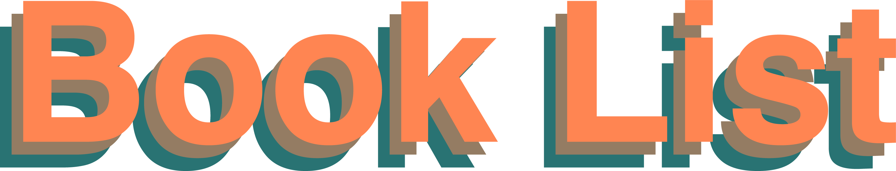

<section class="c-archives">
    <a href="/book-list" class="booklist">
        
    </a>

	<style>
	  input {
		-webkit-transition: font-size 0.05s;
		/* For Safari 3.1 to 6.0 */
		transition: font-size 0.05s;
		font-family: Helvetica, sans-serif;
		font-weight: bold;
		border: none;
		font-size: 2em;
		border-bottom: 1px solid $c-base__02;
		color: $c-accent__blue;
		&#home {
		  font-size: 2em;
		}
		&#book-list {
		  font-size: 1em;
		}
		margin-bottom: 15px;
		width: 100%;
		outline: none;
	  }

	  input:focus {
		&#home {
		  font-size: 5em;
		}
		&#book-list {
		  font-size: 2em;
		}
	  }

	  input::placeholder {
		color: lightgrey;
	  }
	</style>

<input type="text" onkeyup="search()" placeholder="search..." id="home" class="white bg-light-green posts">

    {% for post in site.posts %}

    {% capture this_year %}{{ post.date | date: "%Y" }}{% endcapture %}
    {% capture next_year %}{{ post.previous.date | date: "%Y" }}{% endcapture %}

    {% if forloop.first %}

    <h2 class="f4 helvetica normal dark-green items-center" id="{{ this_year }}-ref">{{this_year}}</h2>
    <ul class="">
        {% endif %}
        <li> 
            <h3>
                <a class="f4 helvetica bold dark-blue no-underline" href="{{ post.url | prepend: site.baseurl }}">
				  {{post.title}}
				</a>
                <br>
                <small class="helvetica normal">{{post.description}}</small>
            </h3>
            <p class="helvetica normal orange">{{ post.date | date: "%B %-d" }}</p>
        </li>
        {% if forloop.last %}
    </ul>
    {% else %}
    {% if this_year != next_year %}
    </ul>
    <h2 class="f4 helvetica normal dark-green items-center" id="{{ next_year }}-ref">{{next_year}}</h2>
    <ul class="c-archives__list">
        {% endif %}
        {% endif %}
        {% endfor %}
</section>
